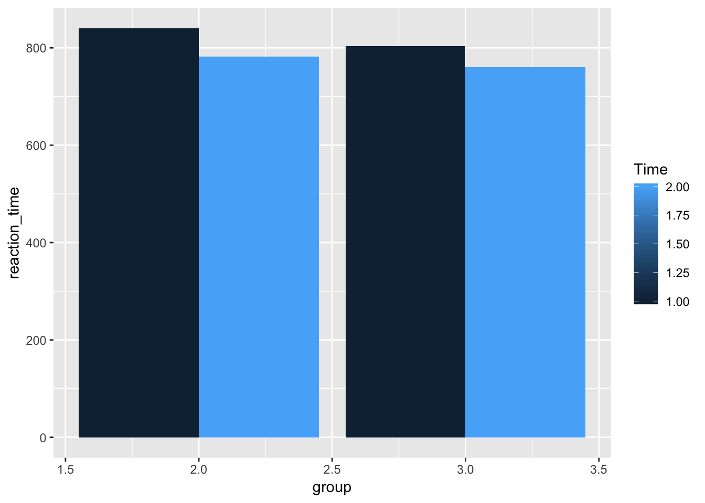

In the paper, “Does One Year of Schooling Improve Children’s Cognitive Control and Alter Associated Brain Activation?” scientists investigated the direct consequence of schooling on the brain network essential to cognitive control. The “5-to-7-year shift” refers to significant developments in children’s cognitive abilities, especially the ability to control their own attention and behavior, that occur when they are between 5-7 years of age. It is believed that schooling plays a significant role in this development as 5-7 years old is when most children start school. Going to school means paying attention in class and learning to sit still, as compared to before, when most of their education was oriented towards play and greater activity.
Executive functions (EFs) are divided into 3 categories: inhibitory control, working memory, & cognitive flexibility. The researchers hypothesized that over the year, EFs (especially inhibitory control), would develop for both groups because of brain maturation, as well as amplified engagement of frontoparietal control regions, specifically, ventrolateral and dorsolateral prefrontal cortex and posterior parietal cortex. They also tested 3 alternative hypotheses concerning the relationship between formal school and changes in EFs: (1) formal schooling amplifies these behavioral & neural changes, (2) its consequences differ across varying features of the task as well as varying regions of the brain, (3) it has no further effect over & above the effects of changes related to age.
The study endured for 2 consecutive summers in Berlin and involved 5-to-6-year-old children. Each child participated in 3 test sessions/year on varying days. During the pretest measurement, all children were in kindergarten, while during the posttest measurement, some had attended almost the entire first grade year, while others continued with kindergarten. Kindergarten was more play-oriented, while all first-grade classes followed a structured, federally-determined curriculum. The sessions were 90 minutes long, with a behavioral component and a neuroimaging component.
The hearts-and-flowers task (HFT) took place at a desktop computer during the first of the 3 testing sessions/year. It comprised 3 conditions, with 20 trials/block. In the first block (congruent condition), the children were presented with a heart on every trial and instructed to press the button on the same side that the heart was on. In the second block (incongruent condition), the children were presented with a flower and instructed to press the button on the side opposite to the one with the flower (requires inhibitory control). In the third block (mixed condition), the same rules applied, except the children were presented with both hearts and flowers (requires cognitive flexibility). This task required preservation of task rules in working memory, along with prolonged attention to the arrangement of trials.
The cats-and-dogs (independent) task (CDT) was performed in the MRI scanner during the third of the 3 testing sessions/year. When presented with a picture of a dog, the children had to press a button with their right index finger (go condition). If it was a cat, they had to withhold this response (no-go condition). Go trials were presented 3 times more than no-go trials, with the order of presentation of these trials being pseudorandom. This task also required prolonged attention to encrypt the appearance of stimuli, as well as working memory to remember to press a button in response to dogs only. The no-go condition required response inhibition so as not to press the button when a cat appeared on the screen.
The researchers found that: (1) first graders performed better overall than kindergartners in all task conditions, (2) task performance progressed from pretest to posttest, (3) children performed best on congruent trials & worst on mixed trials, (4) first graders showed greater task improvement than kindergartners, (5) greater improvement was seen in the incongruent & mixed conditions compared to the congruent condition.
The HFT results supported that schooling led to a general increase in accuracy in all the conditions. The CDT results showed that performance was improved at posttest, and this improvement was independent of schooling. The pretest fMRI results indicate no difference between the two groups’ activation during correct no-go trials. For correct-go trials, however, there were significant group differences, with first-graders showing greater activation in bilateral superior PPC. Left superior PPC displayed a schooling effect, unrelated to group differences. This region’s analyses showed a specific effect of schooling in the superior PPC during correct go trials. Follow-up analyses detected an increase in activation for go trials in a right superior PPC cluster, stronger for first graders than kindergartners at posttest (after attending 1 year of school).
There was a significant positive correlation between increase in PPC activation & CDT performance and between increase in PPC activation & HFT performance from pretest to posttest. Children who had experienced formal schooling exhibited greater HFT accuracy, and therefore greater improvement in EFs. Brain activation patterns during CDT depicted both groups exhibiting an increase in right superior PPC activation during correct go trials across one year (larger for first graders). Increase in PPC activation during the CDT was correlated with better performance on the HFT, therefore supporting the hypothesis that formal education contributes to age-related increases in EFs and magnifies these behavioral and neural changes.
The researchers concluded that early schooling, which requires prolonged attention, leads to greater accuracy on a task that demands greater attention, as well as to increased engagement of the PPC. Despite the fact that EFs are highly heritable, it was found that they can be shaped by exposure to a structured learning environment.
library(data.table)
rftsample <- fread("CopyOfnogo_flowheart_R.csv")library(dplyr)##
## Attaching package: 'dplyr'## The following objects are masked from 'package:data.table':
##
## between, first, last## The following objects are masked from 'package:stats':
##
## filter, lag## The following objects are masked from 'package:base':
##
## intersect, setdiff, setequal, unionexclude_IDS <- rftsample[is.na(rftsample$rt_go) == TRUE, ]$ID
reaction_time <- rftsample %>%
filter(ID %in% exclude_IDS == FALSE) %>%
group_by(group,Time) %>%
summarise(reaction_time = mean(rt_go))
library(ggplot2)## Registered S3 methods overwritten by 'ggplot2':
## method from
## [.quosures rlang
## c.quosures rlang
## print.quosures rlangggplot(reaction_time, aes(x=group,
y=reaction_time,
group=Time,
fill=Time))+
geom_bar(stat="identity",position="dodge")
anova_data <- rftsample %>%
filter(ID %in% exclude_IDS == FALSE) %>%
mutate(ID = as.factor(ID),
group = as.factor(group),
Time = as.factor(Time))
aov.out <- aov(rt_go ~ group*Time + Error(ID/Time), anova_data)
summary(aov.out)##
## Error: ID
## Df Sum Sq Mean Sq F value Pr(>F)
## group 1 22842 22842 1.016 0.318
## Residuals 56 1258643 22476
##
## Error: ID:Time
## Df Sum Sq Mean Sq F value Pr(>F)
## Time 1 69146 69146 12.53 0.000813 ***
## group:Time 1 1489 1489 0.27 0.605386
## Residuals 56 308934 5517
## ---
## Signif. codes: 0 '***' 0.001 '**' 0.01 '*' 0.05 '.' 0.1 ' ' 1print(model.tables(aov.out,"means"), format="markdown")## Tables of means
## Grand mean
##
## 792.67
##
## group
## 2 3
## 811.3 782.1
## rep 42.0 74.0
##
## Time
## 1 2
## 817.1 768.3
## rep 58.0 58.0
##
## group:Time
## Time
## group 1 2
## 2 840.5 782.1
## rep 21.0 21.0
## 3 803.8 760.4
## rep 37.0 37.0We attempted to reproduce a 2x2 mixed-design ANOVA analysis for reaction time versus group of the cats-and-dogs task (CDT). After uploading the data to R, it was observed that R was treating the numbers as letters so all commas were replaced with periods. Then, this data was added into our global environment/library. Certain subjects (ID) had to be excluded from the data set because they had “NAs” or “NAN,” leaving us with 56 of the initial 60 subjects. The data was then grouped based on Time (i.e. posttest and pretest) and group (kindergartners and first graders) and then used ggplot2 to create a bar graph of reaction_time versus group. ID, group, and Time were mutated to become factors, as they were integers before. The ANOVA code for mixed design was used. The dependent variable was rt_go, the independent variable for between subjects was group and Time was the independent variable for within subjects. The summary tool was used to depict the re-analysis values. There was no significant interaction effect between group and Time: F(1,56)=0.27, p=0.61, p>0.05. A significant main effect of Time was found: F(1,56)=12.53, p=0.00081, p<0.05. There was no significant main effect for group: F(1,56)=1.016, p=0.32, p>0.05. These numbers do not match exactly with the results in the paper. This is because the researchers excluded several other subjects so that there were only 53 rather than 56. Although these numbers do not match with the ones in the paper, they produce the same results (i.e. no significant interaction, significant main effect for Time, no significant main effect for group) as those stated on page 973 when discussing the mixed-design ANOVA on reaction times for correct go trials.